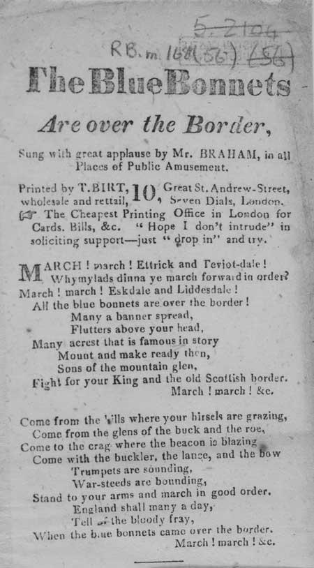
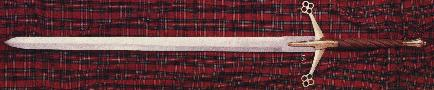
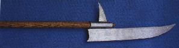
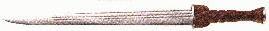
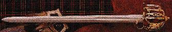
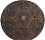

Blue Bonnets over the Border
Les Bonnets bleus ont franchi la frontière
by/par Sir Walter Scott (1820)
1st November 1745
Tune 1 Sequenced by Barry Taylor
Tune 2 Sequenced by Ch.Souchon
Tune 3 Sequenced by Barry Taylor
Tune closely related to "Lesley's March"|
To the lyrics Words by Sir Walter Scott ("The Monastery" 1820): the novel refers, in fact, to the early Scottish Reformation (ca 1560), but the song was connected to the 1745 Rising, by replacing the word "Queen" by "King" in the first stanza, on broadsides like the one below, published between 1830 and 1840. The original title of the tune, included by James Hogg in his "Jacobite Reliques" was "Lesley's March", whereby the Leslie referred to may be Alexander Leslie (c.1580-1661) who defeated the English at Newburn in 1640 or David Leslie who was defeated by Cromwell at Dunbar in 1650. The lyrics (after "Leslie's March"), quoted by Walter Scott in "Minstrelsy of the Scottish Border", are very similar to the text below. Besides, they have striking family likeness with the gathering song "Rise, rise". |
A propos du texte Texte de Walter Scott, tiré de son roman "Le Monastère" (1820): celui-ci se situe en réalité au début de la Réforme Ecossaise (vers 1560), mais il fut relié au soulèvement de 1745, par le remplacement du mot "reine" par "roi" dans la première strophe, sur des "broadsides" tel que celui représenté ci-après, publié entre 1830 et 1840. Le titre original de la mélodie, qui figure dans les "Reliques Jacobites" de James Hogg, était "Marche de Lesley". Il s'agit soit d'Alexandre Leslie (c.1580-1661) qui défit les Anglais à Newburn en 1640 ou David Leslie qui fut battu par Cromwell à Dunbar en 1650. Les paroles (inspirées de celles de la "Marche de Lesley") citées par Walter Scott dans "Les ménestrels du Border d'Ecosse" sont peu différentes du texte ci-après. En outre, elles rappellent étrangement celles du chant de ralliement "Rise, rise". |

Broadside from the National Library of Scotland Collection
Probable period of publication: 1830-1840 shelfmark: RB.m.168(056)
(Trad. Ch.Souchon(c)2003)
    
Map of the places quoted in this song
March, march, Ettrick and Teviotdale,
Why, my lads dinna ye march forward in order?
March, march, Eskdale and Liddesdale,
All the Blue Bonnets are over the border.
1 Many a banner spread flutters above your head,
Many a crest that is famous in story!
Mount and make ready then sons of the mountain glen;
Fight for your Queen and the old Scottish glory!
2 Come from the hills where your hirsels are grazing,
Come from the glen of the buck and the roe,
Come to the crag where the beacon is blazing
Come with the buckler, the lance and the bow.
3 Trumpets are sounding, war steeds are bounding,
Stand to your arms and march in good order
England shall many a day tell of the bloody fray,
When the Blue Bonnets came over the border!
Marche, marche, Ettrick et Teviotdale
Soldats serrez les rangs sous la bannière,
Marche, marche, Eskdale et Liddesdale
Les Bonnets Bleus ont passé la frontière!
1 Plus d'un drapeau flotte au dessus des têtes,
Plus d'un insigne fameux dans l'histoire.
En selle et soyez prêts, fils des vals et des crêtes,
Pour votre reine, l'Ecosse et sa gloire!
2 Venez des montagnes où paissent vos troupeaux
Venez des vallées où le cerf s'élance.
Venez des hauteurs où s'embrasent vos signaux
Avec vos arcs, vos boucliers, vos lances!
3 Sonnez trompettes et bondissez noirs coursiers,
Serrez les rangs, brandissez vos rapières!
Et qu'aucun Anglais ne puisse oublier jamais
Le jour où vous franchîtes la frontière!
On 1rst November 1745 the Jacobite army of about 5000 men
marched for England, occupied Carlisle on 15th November and
reached Derby (less than 120 miles away fom London) on 4th December.
This song reminds of the important part taken historically by the Borderers in the defence of Scotland against the English menace.
Le 1er novembre 1745 l'armée Jacobite d'environ 5000 hommes entra en Angleterre, occupa Carlisle le 15 novembre et parvint jusqu'à Derby (moins de 200 km de Londres) le 4 décembre 1745.
Ce chant (de Walter Scott) rappelle en outre le rôle historique joué par les habitants des "Borders" dans la défense de l'Ecosse contre l'envahisseur saxon.
The primitive weapons mentioned in this song are not just allegorical when applied to the '45.
A tapestry hanging in Rosethay Castle shows the Jacobite army just before
the engagement at Prestonpans: the clansmen are armed with gun or
broadsword but many of them carry scythe-blades fixed to poles,
glaives and Lochaber axes!
Here are weapons frequently referred to in the songs:
Claymore: A two-handed sword with of a cross guard consisting of two down-sloping arms ending in spatulate swellings.
Axe of Lochaber: A massive weapon used by foot-soldiers as a defensive weapon against mounted cavalry.
Dirk: A dagger usually worn with the scabbard affixed to the belt just to the right of the Sporran.
Broad Sword: A Basket-hilt sword which has been until today, the symbol of the Scottish warrior.
Targe a round wooden shield, covered with hide, most with a central spike, it was decorated with embossed designs and nails, which actually made it stronger.
The "Corries" sing "The Blue Bonnets"